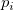
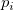
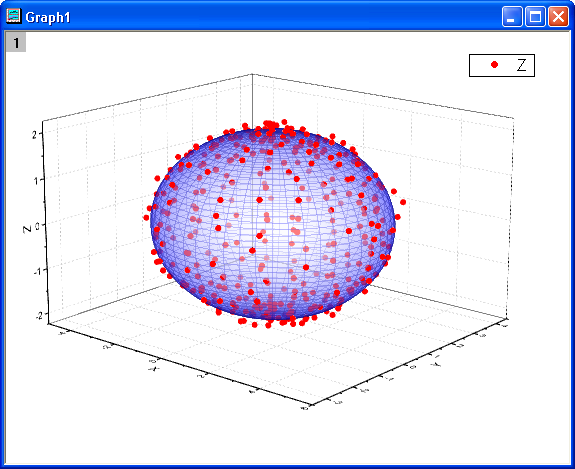

Implizites Anpassen mit drei Variablen
ImplicitFit-3Var
Zusammenfassung
Dieses Tutorial zeigt Ihnen, wie Sie eine implizite Anpassungsfunktion mit drei unabhängigen Variablen definieren und dann mit ihr eine implizite Anpassung auf Daten durchführen.
Origin-Version mind. erforderlich: OriginPro 9.0 SR1
Was Sie lernen werden
Dieses Tutorial zeigt Ihnen, wie Sie:
- eine implizite Anpassungsfunktion definieren.
- eine implizite Anpassung mit drei unabhängigen Variablen durchführen.
- die angepasste Oberfläche manuell zeichnen.
Beispiele und Schritte
Daten importieren
- Öffnen Sie ein leeres Arbeitsblatt. Wählen Sie Hilfe: Ordner öffnen: Sample-Ordner ... im Menü, um den Ordner "Samples" zu öffnen. Öffnen Sie in diesem Ordner den Unterordner Curve Fitting. Dort befindet sich die Datei Ellipsoid.dat. Ziehen Sie diese Datei per Drag&Drop in das leere Arbeitsblatt, um sie zu importieren.
- Markieren Sie Spalte C, klicken Sie mit der rechten Maustaste auf die Auswahl und wählen Sie Setzen als: Als Z setzen im Kontextmenü. Wählen Sie Zeichnen: 3D: 3D-Punktdiagramm im Origin-Menü. Klicken Sie doppelt auf das Diagramm. Wählen Sie im Dialog Details Zeichnung die Ebene Layer1 im linken Bedienfeld, klicken Sie auf die Registerkarte Achse und setzen Sie die X-, Y- und Z-Länge auf 100, 75 bzw. 50. Klicken Sie auf der Symbolleiste 3D-Drehung auf die Schaltfläche Rahmen an Layer anpassen . Das Diagramm sollte folgendermaßen aussehen:
Anpassungsfunktion definieren
Das Diagramm kann mit einem Ellipsoid angepasst werden. Der Ausdruck der Funktion kann folgendermaßen aussehen:
wobei das Zentrum des Ellipsoids ist, a, b und c die Längen der Halb- und Hauptachsen sind und x, y und z drei unabhängige Variablen für die Anpassungsdaten darstellen.
Die Anpassungsfunktion kann mit Hilfe des Hilfsmittels Fitfunktionen erstellen definiert werden.
- Wählen Sie Hilfsmittel: Fitfunktionen erstellen im Origin-Menü.
- Klicken Sie im Dialog Fitfunktionen erstellen auf der Seite Ziel auf die Schaltfläche Weiter.
- Wählen Sie auf der Seite Name und Typ die Option Implicit in der Auswahlliste Eine Kategorie auswählen oder erstellen, geben Sie Ellipsoid im Feld Funktionsname ein und wählen Sie Implizit in der Gruppe Funktionsmodell. Klicken Sie auf Weiter.
Beachten Sie, dass implizite Funktionen in der Kategorie Implizit werden müssen.
- Geben Sie auf der Seite Variablen und Parameter x, y, z in dem Feld Variable und x0, y0, z0, a, b, c in dem Feld Parameter ein. Klicken Sie auf Weiter.
- Geben Sie auf der Seite Ausdrucksfunktion das folgende Skript im Feld Funktionskörper ein:
(x-x0)^2/a^2+(y-y0)^2/b^2+(z-z0)^2/c^2-1
Beachten Sie, dass für eine implizite Funktion , bei der  (i=1,2..) unabhängige Variablen und  (i=1,2...) Parameter sind, es in Origin als definiert werden muss, wobei f die Schätzung darstellt.
(i=1,2..) unabhängige Variablen und  (i=1,2...) Parameter sind, es in Origin als definiert werden muss, wobei f die Schätzung darstellt.
Setzen Sie die Initialisierungsparameter auf der Registerkarte Parameter, wie folgt.
x0=0 y0=0 z0=0 a=3 b=3 c=3
Klicken Sie in de Gruppe Schnellprüfung auf die Schaltfläche Auswerten. Es zeigt sich, dass f=-0,667 bei x=1, y=1, z=1.
Klicken Sie auf die Schaltfläche Weiter und dann erneut auf die Schaltfläche Weiter.
- Legen Sie auf der Seite Grenzen und allgemeine lineare Nebenbedingungen die unteren Grenzen für a, b und c, wie folgt, fest. Klicken Sie dann auf die Schaltfläche Fertig, um den Dialog zu schließen.
Beachten Sie, dass eine Meldung im Meldungsprotokoll gezeigt wird, dass die implizite Funktion im Anwenderdateiordner gespeichert ist.
Kurve anpassen
- Für implizite Anpassungen mit mehr als 2 unabhängigen Variablen unterstützt Origin nur Eingabedaten aus Arbeitsmappen, nicht aus Diagrammen. Daher müssen wir vor der Anpassung die Arbeitsmappe aktivieren. Wählen Sie Analyse: Anpassen: Nichtlineare implizite Anpassung im Origin-Menü. Wählen Sie im Dialog NLFit auf der Registerkarte Einstellungen: Funktionsauswahl und auf der Seite die Funktion Ellipse in der Auswahlliste Funktion.
- Wählen Sie die Seite Datenauswahl, erweitern Sie Eingabedaten: Bereich 1 und wählen Sie Spalte A als X, Spalte B als Y und Spalte C als Z. Eine Fehlermeldung wird unten im Feld Nachrichten gezeigt. Dem Vorschlag der Fehlermeldung folgend, gehen Sie zur Seite Fit-Kurven und ändern Sie den Datentyp von X in Angepasster Punkt für Eingabedaten. Der Datentyp von y und z sollte sich automatisch auch ändern.
Beachten Sie, dass Origin weder die Vorschau der Fit-Kurve im Dialog NLFit noch die angepasste Oberfläche in dem Anpassungsbericht für implizite Anpassungen mit mehr als zwei unabhängigen Variablen unterstützt.
- Da die Initialisierungsparameter im Dialog Fitfunktionen erstellen festgelegt wurden, können wir auf die Schaltfläche Fit klicken, um die Kurve anzupassen.
Anpassungsergebnisse
Wechseln Sie zum Anpassungsbericht. Die Tabellen Parameter und Statistik werden in dem Bericht gezeigt.
Die angepassten Parameter werden wie folgt gezeigt:
| Parameter |
Wert |
Standardfehler |
| x0 |
0,41073 |
0,01576 |
| y0 |
0,32043 |
0,01352 |
| z0 |
0,00147 |
0,00749 |
| a |
4,00325 |
0,02076 |
| b |
3,00097 |
0,01881 |
| c |
1,99972 |
0,00933 |
Das korrigierte R-Quadrat ist 0,99823. Dieser Wert besagt, dass das angepasste Ergebnis sehr gut ist. Beachten Sie, dass dieses Ergebnis von Origin 9 mit 32Bit erstellt wurde, während das Ergebnis von Origin 9 mit 64Bit etwas unterschiedlich und etwas besser aussieht.
Im Arbeitsblatt FitODRCurve1 werden in den ersten drei Spalten die XYZ-Koordinaten für die angepassten Punkte gezeigt.
Beachten Sie, dass in der impliziten Anpassung x, y und z alle unabhängige Variablen sind. Sie werden alle während der Iterationen in der Anpassung korrigiert.
Angepasste Oberfläche
Obwohl Origin 9 SR1 die angepasste Oberfläche in dem Anpassungsbericht für implizite Anpassungen mit mehr als zwei unabhängigen Variablen nicht zeigt, können Sie in diesem Beispiel den angepassten Ellipsoid mit Hilfe des Hilfsmittels Parametrisches 3D-Funktionsdiagramm wie folgt in Origin zeichnen.
- Aktivieren Sie den Anpassungsbericht, führen Sie das folgende LabTalk-Skript im Skriptfenster aus, um die angepassten Parametervariablen zu ermitteln.
getnlr tr:=tt; x0=tt.x0; y0=tt.y0; z0=tt.z0; a=tt.a; b=tt.b; c=tt.c;
Die Variablen x0, y0, z0, a, b und c können in den folgenden Schritten verwendet werden.
- Aktivieren Sie Graph1. Wählen Sie Datei: Neu: Funktionsdiagramm: Parametrisches 3D-Funktionsdiagramm im Origin-Menü. Setzen Sie im Dialog Parametrisches 3D-Funktionsdiagramm erstellen u von 0 auf pi und v von 0 auf 2*pi. Definieren Sie X ,Y und Z folgendermaßen.
X(u,v)=x0+a*sin(u)*cos(v) Y(u,v)=y0+b*sin(u)*sin(v) Z(u,v)=z0+c*cos(u)
Wählen Sie Zu aktivem Diagramm hinzufügen aus der Auswahlliste unten links im Dialog aus.
Klicken Sie auf OK, um den Dialog zu schließen. Ein dreidimensionales Ellipsoiddiagramm wird zu Graph1 hinzugefügt.
- Klicken Sie doppelt auf das Diagramm. Im Dialog Details Zeichnung können Sie das Diagramm, wie folgt, benutzerdefiniert anpassen.
Beachten Sie, dass nur OpenGL 2.1 oder höher die 3D-Transparenz in Origin 9.0 unterstützt. Sie können Einstellungen: 3D-OpenGL-Einstellungen im Origin-Menü auswählen, um Ihre OpenGL-Version zu überprüfen. Sollte Ihre OpenGL-Version älter sein als 2.1, sollten Sie die Einstellung für 3D-Transparenz in Schritt 3.2 ignorieren.
- Wählen Sie im linken Bedienfeld Layer1, klicken Sie auf die Registerkarte Größe/Performance und deaktivieren Sie das Kontrollkästchen Worksheet-Daten, maximale Punktzahl pro Kurve in der Gruppe Entwurfsmodus, Punkte wenn nötig auslassen. Klicken Sie auf die Registerkarte Beleuchtung, wählen Sie Direktional in der Gruppe Modus und wählen die Farbe Blau für die Umgebung in der Gruppe Lichtfarbe.
- Wählen Sie die zweite Zeichnung im Zweig Layer1, klicken Sie auf die Registerkarte Oberfläche und legen Sie die Transparenz auf 50% fest. Wählen Sie die Registerkarte Füllen und setzen Sie die Farbe für Stückweise füllen in der Gruppe Vordergrundoberfläche auf Weiß. Klicken Sie auf OK, um den Dialog zu schließen.
Das Diagramm für den angepassten Ellipsoid sieht folgendermaßen aus:
